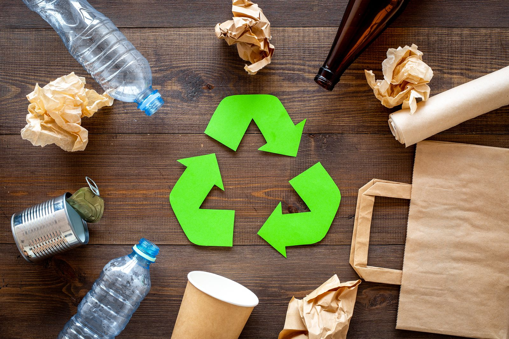
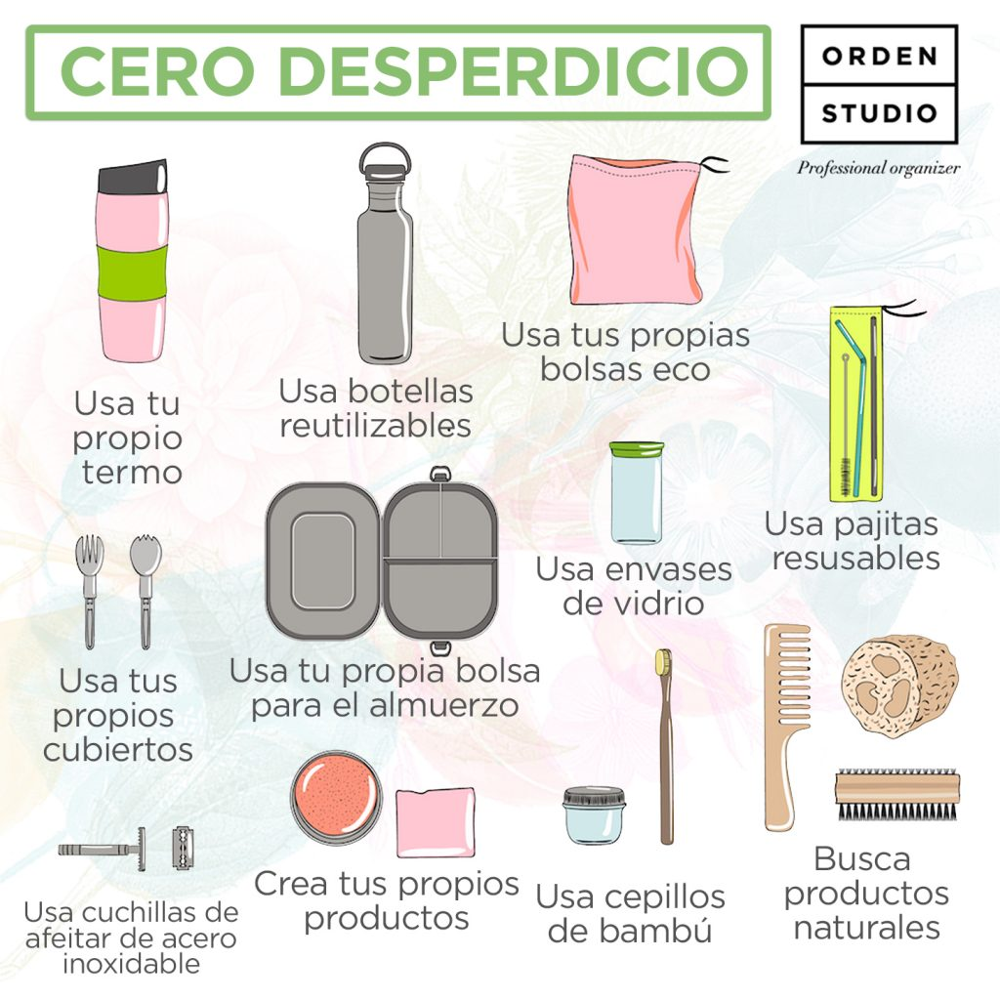
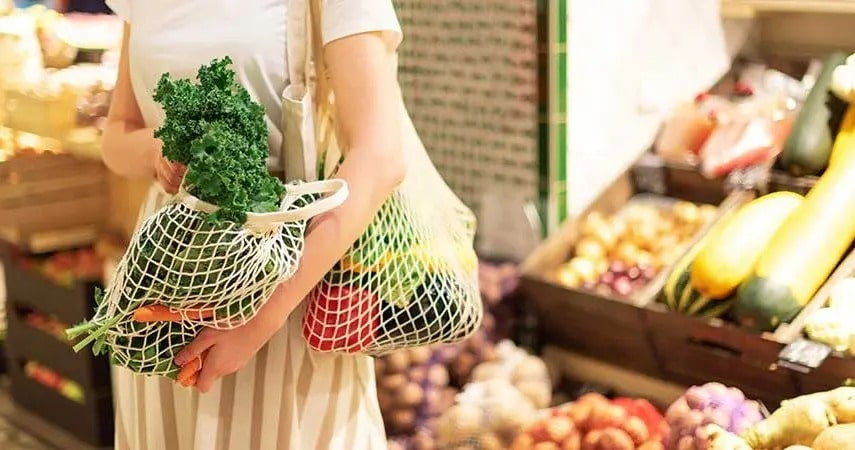

Según la Alianza Internacional Zero Waste (ZWIA), se trata de lograr “la conservación de todos los recursos mediante la producción, el consumo, la reutilización y la recuperación responsable de todos los productos, embalajes y materiales, sin quemarlos y sin vertidos al suelo, al agua o al aire para que no amenacen el medioambiente o la salud humana”.
El zero waste o cero residuos es, básicamente, una iniciativa que tiene como objetivo vivir generando la mínima cantidad de basura posible. Este movimiento nace de la problemática que ha supuesto, especialmente en los últimos 60 años, la popularización de la cultura del consumo de usar y tirar.
El sector de los desechos sigue contribuyendo considerablemente a la crisis planetaria. Se estima que los seres humanos generamos anualmente 2240 millones de toneladas de residuos sólidos urbanos, de los cuales se gestiona únicamente el 55% en instalaciones controladas. Cada año, se pierden o desperdician alrededor de 931 millones de toneladas de alimentos, así como hasta 14 millones de toneladas de desechos plásticos invaden los ecosistemas acuáticos.
Es en este contexto y buscando una solucion a esta crisis nace el movimiento zero waste, con 5 reglas básicas conocidas como las "5 R" (por sus siglas en inglés):
1. Rechazar: No consumas sin sentido y di que NO a todas aquellas cosas que realmente no necesitas.
2. Reducir: Disminuye el consumo revisando tus “necesidades”.
3. Reutilizar: Substituye todos los productos de un sólo uso por alternativas reutilizables y descubre todo lo que ofrecen las tiendas de segunda mano e intercambios.
4. Reciclar: Si no has podido rechazar, reducir ni reutilizar, la mejor opción es reciclar, entonces sí.
5. Rot: La materia orgánica es un recurso muy valioso y fácil de aprovechar. Composta en casa o échalo al contenedor de la fracción orgánica.
Sabemos que puede parecer abrumador generar un cambio de hábitos como éste. Sin embargo, nuestros esfuerzos no tienen que ser perfectos. No hay un destino a donde llegar, sino un camino por recorrer.
El objetivo del desperdicio cero radica en la forma que le damos a nuestros esfuerzos y la manera en la cual satisfacemos nuestras necesidades a través de ellos. Es un simple cambio de hábitos por un fin mayor.. mucho mayor.
Estos son algunos productos para comenzar a reducir nuestros desperdicios de manera sencilla:
Por ejemplo, el cobro de las bolsas de plástico en tiendas y supermercados para reducir su uso, ya que están entre los objetos que más contaminan los océanos, junto con colillas de cigarrillos, envoltorios de comida o botellas plásticas, según Ocean Conservancy. Reducir el uso de las bolsas también es la meta de una directiva del Parlamento Europeo (de 2015) que contempla incentivos industriales para desarrollar alternativas menos contaminantes y la recogida del 90% de los envases de plástico de las bebidas (los de un solo uso) para 2025.
Algunos países legislan con ese mismo objetivo. Por ejemplo, España tiene previsto prohibir “el uso, la comercialización, la importación y la exportación de utensilios como platos, vasos, tazas, cubiertos y pajitas desechables, diseñados para su retirada después de un solo uso, íntegramente fabricados en cualquier variedad de plástico”. Esos utensilios tendrían que fabricarse con al menos un 50% de materias biodegradables.
